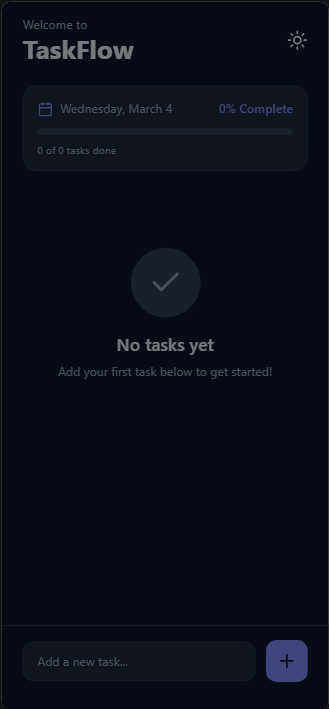

AI w Praktyce - Zobacz Jak To Działa
Poznaj praktyczne zastosowania sztucznej inteligencji w codziennym życiu
Claude AI w Microsoft Excel - Analiza Danych w Naturalnym Języku
Integracja Claude AI z Microsoft Excel eliminuje potrzebę skomplikowanych formuł i makr. Analitycy i specjaliści biznesowi mogą teraz przetwarzać dane, tworzyć raporty i generować insights używając prostych poleceń w naturalnym języku.
Oszczędność 60-80% Czasu
Redukcja czasu analizy z 45 minut do 2 minut. Automatyczna segmentacja i raportowanie w sekundach.
Bez Znajomości Formuł
Analiza danych bez zaawansowanych formuł Excel. Każdy może być analitykiem - wystarczy opisać co chcesz osiągnąć.
Wszechstronne Zastosowania
Segmentacja klientów, personalizacja treści marketingowych, czyszczenie danych, wykrywanie anomalii - jednym poleceniem.
Przykładowe zastosowania:
- Segmentacja klientów według przychodów i regionów
- Generowanie spersonalizowanych szablonów komunikacji
- Walidacja i standaryzacja danych kontaktowych
- Tworzenie raportów biznesowych bez pivot tables
- Wykrywanie duplikatów i anomalii w bazach danych
Chcesz wdrożyć AI w swoich procesach analitycznych? Skontaktuj się z nami, aby dowiedzieć się więcej o integracji Claude AI z Twoimi narzędziami biznesowymi.
Umów bezpłatną konsultację
Analiza Skanów MRI z MedGemma 1.5
Przedstawiamy zaawansowany system analizy obrazów medycznych wykorzystujący model MedGemma - specjalistyczny model AI przeszkolony w dziedzinie medycyny.
Pełna Prywatność
Model działa w pełni lokalnie - żadne dane nie są wysyłane na zewnętrzne serwery. Twoje dane medyczne pozostają bezpieczne.
Natychmiastowa Analiza
Szybka interpretacja obrazów MRI z wykorzystaniem najnowszych osiągnięć w dziedzinie AI medycznego.
Specjalistyczna Wiedza
Model trenowany na danych medycznych zapewnia profesjonalne wsparcie diagnostyczne.
To tylko jeden z wielu przykładów praktycznego wykorzystania AI w codziennym życiu. Od automatyzacji procesów biznesowych, przez analizę danych, aż po specjalistyczne zastosowania branżowe.
Dowiedz się więcejOCR – Jak zamienić obraz w edytowalny tekst?
OCR (Optical Character Recognition) to technologia, która "czyta" tekst ze zdjęć, skanów lub dokumentów PDF i zamienia go na format, który można kopiować i edytować — np. w Wordzie. Wyobraź sobie, że masz cyfrowego asystenta, który przepisuje za Ciebie notatki ze zdjęcia tablicy czy wydrukowanego dokumentu — błyskawicznie i bez literówek.
DeepSeek-VL2 / DeepSeek OCR
Nowoczesny model multimodalny ze świetnym stosunkiem wydajności do zasobów. Łączy rozumienie obrazu z rozpoznawaniem tekstu, idealny do złożonych dokumentów.
Tesseract OCR
Klasyka OCR, rozwijana przez Google — najbardziej popularny silnik open-source. Obsługuje ponad 100 języków i sprawdza się świetnie w standardowych dokumentach.
PaddleOCR
Wszechstronny framework od Baidu — świetny do wielu języków, w tym azjatyckich. Oferuje wykrywanie tekstu, rozpoznawanie i klasyfikację w jednym narzędziu.
Praktyczne zastosowania OCR:
- Automatyzacja księgowości — odczytywanie faktur i paragonów
- Digitalizacja archiwów papierowych dokumentów
- Ekstrakcja danych z formularzy i umów
- Skanowanie wizytówek i automatyczne dodawanie kontaktów
- Przetwarzanie korespondencji i dokumentacji urzędowej
Chcesz zautomatyzować przetwarzanie dokumentów w swojej firmie? Technologia OCR idealnie sprawdza się w automatyzacji księgowości (czytanie faktur) oraz digitalizacji archiwów. Skontaktuj się, aby poznać możliwości wdrożenia.
Umów bezpłatną konsultację

Twoja Własna Aplikacja Mobilna - Bez Kodowania!
Marzysz o własnej aplikacji mobilnej, ale nie umiesz programować? Dzięki AI to już nie problem! Sztuczna inteligencja pisze kod za Ciebie — wystarczy opisać, czego potrzebujesz, a AI stworzy gotową, działającą aplikację. To jak mieć osobistego programistę, który pracuje na zawołanie.
Od Pomysłu do Aplikacji w Kilka Godzin
Zamiast tygodni nauki programowania — opisujesz swój pomysł, a AI generuje kompletny kod aplikacji. Prototyp gotowy tego samego dnia!
Zero Doświadczenia? Żaden Problem
Nie musisz znać React Native, Swift ani Kotlina. AI rozumie naturalny język — powiedz co chcesz, a dostaniesz gotowy kod.
Profesjonalny Design w Pakiecie
AI nie tylko pisze kod — tworzy też nowoczesny, elegancki interfejs z animacjami, trybem ciemnym i intuicyjną nawigacją.
Co możesz stworzyć z AI:
- Aplikacje do zarządzania zadaniami i produktywnością
- Kalkulatory, konwertery i narzędzia codzienne
- Aplikacje fitness, zdrowotne i do śledzenia nawyków
- Proste gry mobilne i quizy edukacyjne
- Aplikacje dla małego biznesu — rezerwacje, katalogi, CRM
Masz pomysł na aplikację? Nie musisz już szukać programisty ani uczyć się kodowania. AI sprawia, że tworzenie aplikacji mobilnych jest dostępne dla każdego. Porozmawiaj z nami o swoim projekcie!
Umów bezpłatną konsultacjęPrzewidywanie Mutacji Genetycznych z Modelem Evo 2
Evo 2 to przełomowy, w pełni otwartoźródłowy model AI (foundation model) wytrenowany na 9 bilionach par zasad DNA ze wszystkich domen życia — bakterii, archeonów, eukariontów i bakteriofagów. Dzięki oknu kontekstowemu wynoszącemu 1 milion par zasad i rozdzielczości jednego nukleotydu, Evo 2 potrafi przewidywać skutki mutacji genetycznych bez dodatkowego trenowania — od wariantów klinicznych w genie BRCA1 po mutacje w niekodujących regionach genomu.
Precyzyjna Analiza Wariantów
Ocena patogenności mutacji genetycznych (m.in. BRCA1, warianty kliniczne z bazy ClinVar) w trybie zero-shot — bez konieczności dodatkowego trenowania modelu dla każdego nowego zadania.
Analiza w Skali Genomu
Przetwarzanie sekwencji DNA o długości do 1 miliona par zasad, co umożliwia badanie całych genów wraz z ich otoczeniem regulacyjnym — niedostępne dla wcześniejszych modeli.
Projektowanie Nowych Sekwencji
Poza predykcją, Evo 2 generuje nowe sekwencje DNA — od genomów mitochondrialnych po chromosomy eukariotyczne — otwierając drogę do projektowania nowych terapii i systemów biologicznych.
Przykładowe zastosowania:
- Przewidywanie patogenności wariantów klinicznych w onkologii i genetyce medycznej
- Analiza wpływu mutacji w niekodujących regionach DNA (UTR, introny, enhancery)
- Wsparcie w projektowaniu terapii genowych i nowych cząsteczek biologicznych
- Automatyczna adnotacja elementów funkcjonalnych genomu (egzony, miejsca splicingu, tRNA)
- Identyfikacja potencjalnie szkodliwych mutacji w badaniach przesiewowych
Chcesz wykorzystać zaawansowane modele genomiczne AI w badaniach medycznych lub farmaceutycznych? Skontaktuj się z nami, aby omówić wdrożenie rozwiązań opartych na Evo 2 w Twojej organizacji.
Umów bezpłatną konsultację